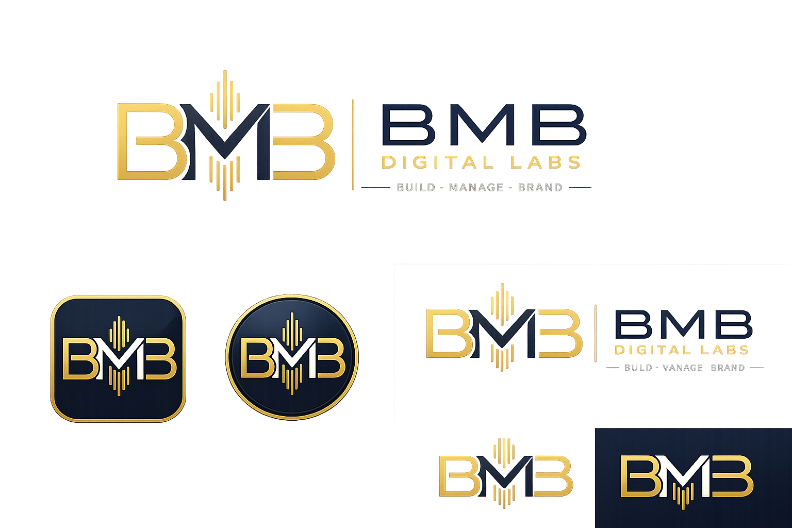

Construimos
Plataformas, webs, productos digitales y experiencias que resuelven problemas reales con una interfaz clara.

Build. Manage. Brand. Creamos plataformas, webs y negocios digitales con mentalidad de misión: interfaz precisa, procesos ordenados, cobros claros e identidad preparada para resistir una mirada exigente.
Vision de empresa
BMB Digital Labs nace para crear negocios digitales propios y servicios web con criterio de operacion: cada idea debe poder presentarse, venderse, cobrarse, medirse y explicarse.
Plataformas, webs, productos digitales y experiencias que resuelven problemas reales con una interfaz clara.
Negocio, cobros, fiscalidad, datos, procesos internos e informes de integridad para crecer sin improvisar.
Cuidamos marca, documentos, tono visual y confianza para que cada producto tenga una imagen propia y defendible.
De Tierra a Marte
La web se mueve como una ruta de mision. Al bajar, la Tierra queda atras, aparecen conexiones, campos y estaciones de trabajo, y el destino se vuelve rojo: una forma visual de explicar que BMB transforma ideas en sistemas operativos.
Direccion creativa y tecnica
BMB Digital Labs une oficio tecnico, diseño web, producto digital, automatizacion y sensibilidad visual para construir sistemas que no parezcan improvisados.
Desde 1990, una trayectoria profesional ligada al trabajo practico, la logistica, la administracion, el trato comercial y la evolucion digital ha terminado tomando forma en esta marca: una empresa capaz de crear, ordenar y lanzar negocios digitales con consistencia.
La inteligencia artificial se integra como una extension del proceso creativo y tecnico: visualizo la idea, defino el criterio, diseño la direccion y uso la tecnologia para convertirlo en prototipos, interfaces, documentos y sistemas operativos.
La identidad legal del fundador queda reservada para contratos, alta fiscal y documentacion oficial. De cara al mercado, la protagonista es BMB Digital Labs y la calidad del trabajo que presenta.
Cartera inicial
Gestion privada de alquileres, recibos, fianzas, documentos, contratos e informes fiscales orientativos.
Proyecto proximo para presentar, vender y certificar obras digitales con una experiencia visual premium.
Diseño y construccion de webs para negocios que necesitan una imagen seria, clara y comercial.
Sistema futuro para suscripciones, facturas, conciliacion, impuestos y reportes de integridad.
Diseñadores y creadores
Cada proyecto debe poder aterrizar en una ficha clara: objetivo, estado, demo, marca, tecnologia, modelo de cobro y siguiente paso.
Cada proyecto tendra su nombre, categoria, objetivo, tecnologias, capturas y una llamada para ver la demo o solicitar informacion.
Paginas rapidas para negocios que necesitan presencia clara, dominio, hosting y una imagen seria desde el primer dia.
Logotipos, paletas, textos, recursos visuales y presentaciones para que cada creador tenga una presencia reconocible.
Herramientas digitales con paneles, cobros, documentos, datos y flujos pensados para uso real, no solo para verse bien.
Espacios visuales para enseñar colecciones, obras, prototipos, renders o proyectos creativos con una experiencia premium.
Empresa raiz
BMB Digital Labs nace como laboratorio para crear plataformas propias, enseñar trabajo real y construir presencia digital con criterio. Primero presentamos lo que sabemos hacer; despues, si hay encaje, desarrollamos soluciones personalizadas para clientes.
Cada proyecto se valora por alcance, riesgo, mantenimiento, datos, integraciones y nivel de acabado. La web no vende una tabla de precios: enseña una forma de trabajar.
Un cliente satisfecho es nuestro mejor comercial.
Plataformas que nacen desde una necesidad concreta y se prueban con usuarios reales.
Diseño web, marca, documentos, automatizacion y herramientas a medida cuando el encaje es bueno.
Procesos, cobros, fiscalidad, datos, logistica y trazabilidad pensados antes de crecer.
Interfaces, tono visual y documentos con una imagen seria, limpia y defendible.
Integridad y confianza
Minimizacion, control del usuario, exportaciones comprensibles y separacion entre datos privados, fiscales y comerciales.
Suscripciones, facturas, abonos, comisiones y conciliacion pensados desde el inicio para evitar desorden.
Registro de eventos criticos, huellas, informes y trazabilidad para revisar el negocio con gestoría o partners.
Contacto
Este formulario prepara un correo para iniciar una conversación. No hay contratación automática ni precios cerrados: primero escuchamos, ordenamos alcance y valoramos si podemos aportar de verdad.
Legal
BMB Digital Labs es una marca/proyecto digital en fase de presentación. Los datos fiscales completos del titular se incorporarán antes de iniciar contratación formal, facturación o prestación continuada de servicios.
Contacto operativo: contacto@bmbdigitallabs.com.
Salvo indicación expresa, diseño, textos, estructura visual, logotipos, composiciones y recursos propios de BMB Digital Labs quedan protegidos. Queda prohibida su reproducción, transformación o uso comercial sin autorización previa.
Los datos enviados mediante el formulario se usarán exclusivamente para responder a la consulta. La base de tratamiento es el consentimiento del usuario. No se ceden datos a terceros salvo obligación legal.
El usuario puede solicitar acceso, rectificación o supresión escribiendo al correo de contacto.
Esta versión no instala cookies analíticas ni publicitarias propias. Las imágenes espaciales se acreditan a NASA / GSFC / JPL. El uso de material NASA no implica patrocinio ni aprobación.